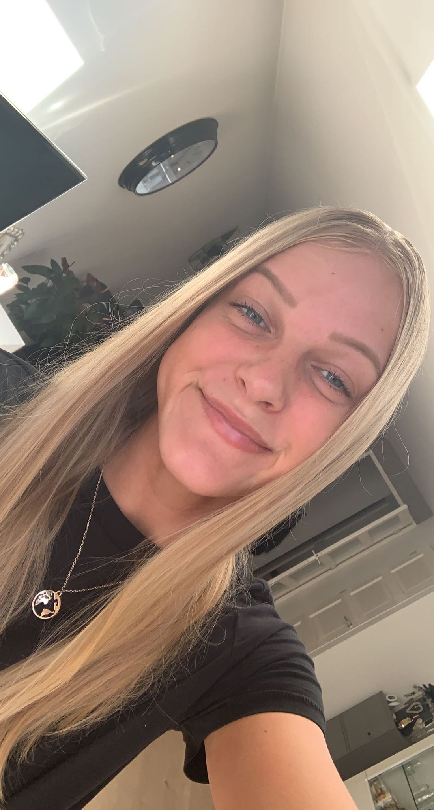

Persoonlijk (CV)
Ik ben Donna Baijens. Ik ben 19 jaar oud. Ik woon in Krommenie. Ik zit in mijn tweede jaar van CMD en ben bezig om mijn bachelor te halen. In dit CV laat ik jullie mijn levensloop zien.
Ik heb VWO gedaan op de middelbare school. Hier heb ik informatica gehad en dit sprak mij erg aan. Ik heb CMD gekozen, omdat dit een brede opleiding is en ik hier kan uitzoeken welke kant ik op wil qua designer in de toekomst. Op de middelbare school heb ik al een paar websites moeten maken. Ook heb ik met queries, databases, PHP, MySQL etc. gewerkt. Vormgeving is natuurlijk ook een belangrijk deel van een website.
Ik heb 3 jaar lang gewerkt bij de Coop/Plus. Hier heb ik met veel plezier gewerkt met allemaal leuke collega’s. Ik ben daar gestopt na 3 jaar en nu werk ik sinds 2 maanden bij de McDonald’s.
Ik beheers 4 talen. Nederlands is mijn moedertaal. Verder heb ik op school Engels, Duits en Frans geleerd. Frans beheers ik het minste, want dat heb ik laten vallen na het 3e schooljaar. Verder spreek ik een paar woorden Italiaans, omdat ik hier al 14 jaar naartoe ga op vakantie.
Op school heb ik al veel geleerd. Ik heb vooral mijn Adobe skills ontwikkeld, zoals Illustrator en Adobe XD. Hier kan ik nog veel beter in worden. Verder heb ik geleerd om creatief te denken en om alles zoveel mogelijk visueel te maken door middel van sketchnotes.
Ik ben zelf een georganiseerd persoon. Ik moet altijd een planning hebben, zodat ik die ook na kan komen en de deadlines op tijd afkrijg. Verder ben ik een spelling freak, want ik ben altijd degene die nog even het document naloopt op spellings- of formuleringsfouten en op de ctrl+enter bij elke pagina, zodat alles goed blijft staan. Ik vind zelf dat ik goed alleen kan werken, alleen in een team vind ik persoonlijk fijner, want dan kun je van elkaar leren, taken verdelen en allemaal samenwerken tot 1 mooi project.
Projecten/vakken


Mijn competenties
Bij CMD leer je veel competenties. In het leven zelf leer je natuurlijk ook veel bewuste en onbewuste dingen. Er zijn soft en hard skills. Hard skills zijn echt de programma's/design richtingen die je al kunt. Soft skills zijn meer de kwaliteiten van jezelf en waar jij je allemaal aan houdt. Ik ben nog een student, dus ik ben nog bezig met hard en soft skills leren en ze goed uitvoeren. Wat ik tot nu toe al heb geleerd bij CMD qua competenties zijn:
Hard skills: UX Research, UI Design, Javascript, Prototyping, Figma, HTML/CSS, Programming, Sketch, UX Design, Wireframing en Data Analysis.
Soft skills: Time management, Creativity, Communication, Presentation, Flexibility, Self learning, Organized, Social skills, Teamwork, Confidence, Ambition en Responsibility.